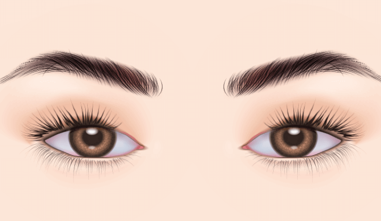
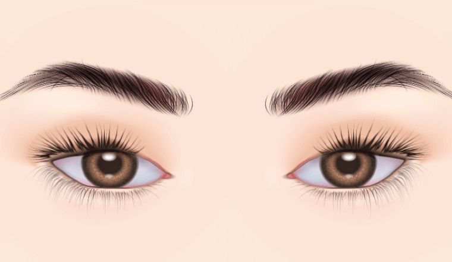
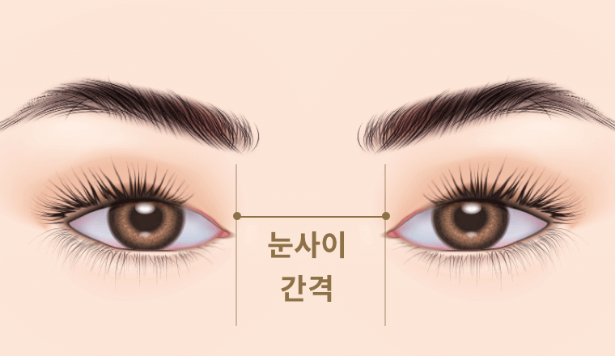
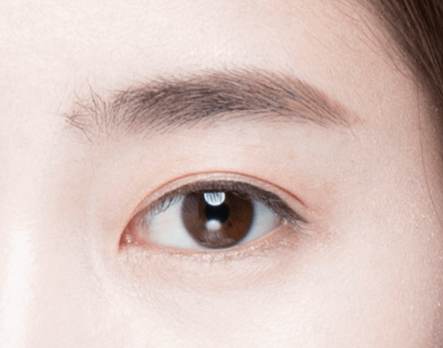

처음도 마지막도
연세 자연미에서
#쌍커풀
재수술
-

수술 시간
1시간
-

마취방법
수면/국소마취
-

실밥제거
4~5일 후
-

내원치료
1~2회 내원
-

회복기간
개인차 있음
쌍커풀 재수술을 하기 위해선?
재수술을 하기 위해서는 적절한 시기를 파악하는 것이 매우 중요합니다.
첫수술로 인한 유착현상이 사라지고 눈의 조직이 안정화된 후 재수술이 진행되는데
일반적으로 6개월 이상 1년 경과 후가 적절합니다.
BEFORE

AFTER

눈 재수술수술방법
재수술은 특히 원인을 정확하게 파악하는 것이 가장 중요합니다.
개인마다 눈 뜨는 근육, 피부 두께, 동공의 위치, 눈꼬리의 각도가 다르기 때문에
개인의 얼굴에 맞는 정확하고 꼼꼼한 분석과 섬세한 수술이 필요합니다.
현재 나의 눈 상태를 확인합니다
전문의의 진단을 통해 나의 눈 상태를 정확히 확인하고 어떤 수술이 필요할지 결정합니다.
-

안검하수 유무
-
몽고주름의 형태
-

눈꼬리 각도
-
피부처짐
-

눈 사이 간격
-
사시유무
쌍커풀 재수술 방법
-
1
마취를 하고 절개와 박리를
통해 이전 수술의 흉터를
교정합니다. -

2
필요한 경우 피부조직, 지방
등을 추가로 제거합니다. -
3
새로운 쌍커풀 라인을
만듭니다. -

4
봉합을 하고 수술을
마무리합니다.